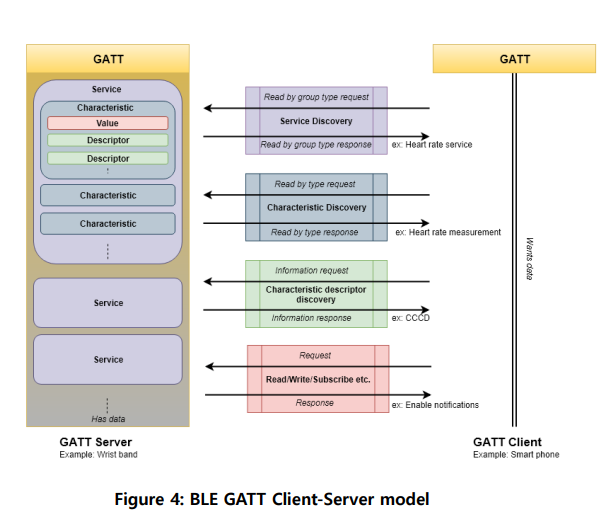
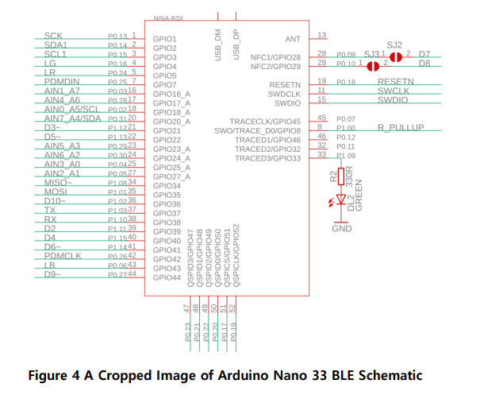
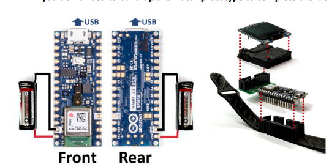

Ultra-Low-Power Smartwatch Firmware
Arduino Nano 33 BLE · C/C++ · nRF5 SDK concepts · sensors · BLE
Wearable firmware project focused on reducing average current while preserving useful interaction: step counting, gesture UI, OLED display behavior, and BLE phone synchronization.
- Reduced average current to 85 µA using IMU duty cycling, OLED auto-sleep, and event-driven interaction.
- Integrated LSM IMU step counting, APDS-9960 gesture control, I2C OLED display, and BLE sync.
- Mapped firmware behavior to the BLE GATT client-server model, including services, characteristics, descriptors, read/write, and notifications.
- Relevant to Neuralink EE intern work through power management, sensors, embedded C/C++, lab-style debugging, and communication protocol design.



Firmware demo video — open this from the extracted folder so the browser can load the local video asset.